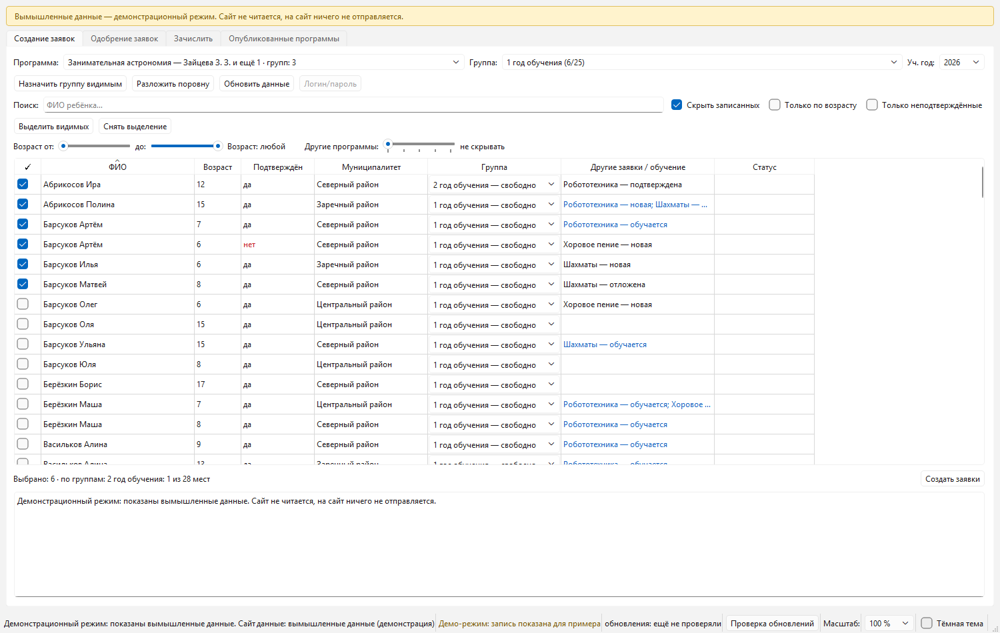
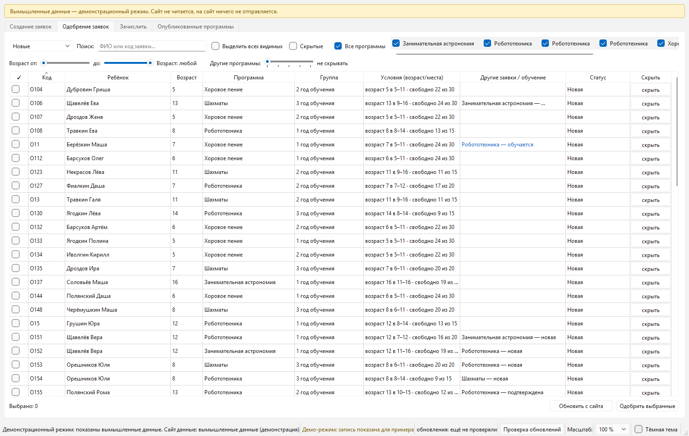
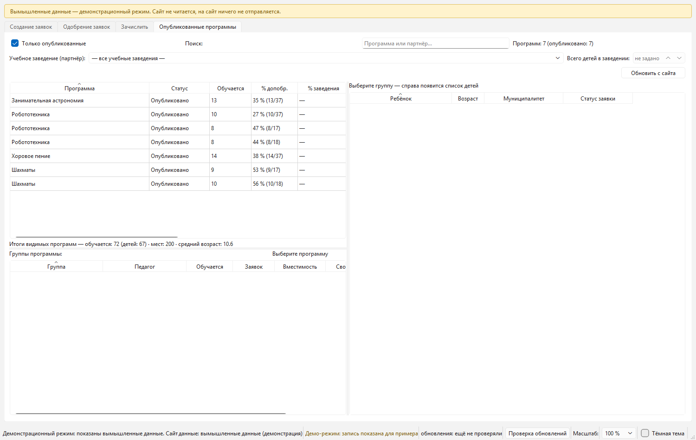

Заявки пачками
Выбрали детей — и очередь сама создаёт заявки, одобряет и зачисляет. Видно прогресс: сколько сделано, что осталось, где сайт отказал и почему. Можно прервать и продолжить.
Для организаций дополнительного образования
«Помощник Навигатора» — программа для Windows, которая работает в вашей админке навигатор.дети и делает рутину за вас: создаёт заявки очередью, одобряет и зачисляет списком, раскладывает детей по группам, считает занятость и проценты. Ничего пересылать и вводить дважды не нужно: программа читает и пишет то же, что вы делаете руками, только без сотни щелчков.
Выбрали детей — и очередь сама создаёт заявки, одобряет и зачисляет. Видно прогресс: сколько сделано, что осталось, где сайт отказал и почему. Можно прервать и продолжить.
Поиск по фамилии, возраст «от и до», «только неподтверждённые», «скрыть уже записанных на эту программу», «другие программы». Сортировка — по любому столбцу, включая возраст и муниципалитет.
«Назначить группу видимым» и «Разложить поровну»: дети уходят в группы по местам, а не «как получится». Программа не даст записать в группу больше детей, чем в ней мест.
Вкладка «Опубликованные программы»: программы, группы, педагоги, сколько мест, сколько занято. Проценты занятости по учебному заведению — для отчёта, без ручного счёта.
Видно возраст ребёнка и подтверждены ли данные. Для программ с возрастными рамками это экономит главное: время на разбор «а этому ребёнку можно?».
Обычно программа работает без браузера. Если сайт поменял форму входа или показывает капчу — есть аварийный вход браузером: Edge или Chrome, который уже стоит на компьютере.
Снимки сделаны на вымышленных данных: настоящих детей и заявок в кадре нет. Это тот же интерфейс, что вы получите, — порядок вкладок: заявки, одобрение, зачисление, программы, «О программе» с пошаговой инструкцией. Снимки есть в двух темах: страница сама показывает ту, что выбрана в вашей Windows.



Программу можно поставить до покупки и без риска: без ключа она работает только на чтение — показывает настоящие данные вашей организации (дети, заявки, программы, группы, занятость) и ничего не меняет на сайте.
скачать установщик установщик и все версии скачать без GitHub
Кнопка ведёт на постоянный адрес установщика, а версия и дата выпуска берутся из того же подписанного файла, по которому программа обновляется сама. Установщик ставится «только для меня», без прав администратора — в папку пользователя, и сразу создаёт ярлык. Портативной сборки нет: обновления приезжают сами, а данные (пароль, ключ) лежат рядом с программой и сохраняются. Размер и контрольная сумма — в разделе для ИТ-службы.
Программа продаётся с ключом, и без ключа она работает только на чтение: видны дети, заявки, программы, группы, занятость и проценты — всё, что вы и так видите в админке. Разница одна: кнопки создания, одобрения и зачисления скажут «демонстрационный режим» и предложат ввести ключ.
В самой программе есть вкладка «О программе»: там простыми словами написано, как ею пользоваться — по шагам, от входа до зачисления, — и оттуда же можно открыть эту страницу или купить ключ. Покупать вслепую не придётся.
Поэтому можно спокойно поставить программу до покупки и посмотреть на своих настоящих заявках, сколько времени она экономит. Ничего не испортится: без ключа она ничего не меняет.
Ключ выдаётся на ваш логин администратора навигатор.дети и хранится в зашифрованном виде рядом с программой. Он не привязан к компьютеру: переставили Windows, поставили программу на другой рабочий компьютер — ввели тот же ключ.
data
рядом с самой программой, — а не в облаке.Логин и пароль программа сохраняет в той же зашифрованной папке, чтобы не спрашивать их каждый раз. Пароль не передаётся продавцу: для ключа нужен только логин администратора, который вы сами укажете при покупке.
Нет. Так Windows ведёт себя с любой программой, у которой нет платного сертификата подписи кода (он стоит десятки тысяч рублей в год). Предупреждение означает только «я не знаю, кто это сделал», а не «внутри вирус».
Как запустить:
Если в вашей организации запуск неизвестных программ запрещён — покажите специалисту блок для ИТ-службы: там размер файла и контрольная сумма, по которым он убедится, что файл не подменили.
Программа делает то же, что вы делаете в браузере под своей учётной записью, и работает под вашим доступом. Данные детей она не отправляет ни нам, ни кому-то ещё: они лежат на вашем компьютере в зашифрованном виде и удаляются вместе с программой. Подробнее — в блоке «Данные детей» и в «ПРОЧТИ-МЕНЯ.txt», который идёт вместе с программой.
Ключ выдаётся на ваш логин, чтобы им не мог воспользоваться кто-то другой. Логин известен и вам, и сайту — секрета в нём нет. Пароль присылать не нужно ни в каком случае: продавцу он не нужен и он его не спрашивает.
Программа сама проверяет обновления и ставит новые версии — скачивать и переустанавливать ничего не нужно. Новая версия ставится в соседнюю папку, а прежняя остаётся на месте: если что-то пойдёт не так, можно работать на старой. Если изменится даже форма входа, есть аварийный вход браузером.
Да, как и для работы в браузере: программа общается с сайтом навигатор.дети под вашим логином. Кроме сайта она обращается только к нашему серверу обновлений (узнать, нет ли новой версии) — и эту проверку можно отключить в настройках.
Ключ привязан к логину администратора, а не к компьютеру: рабочий и домашний компьютер с одним ключом — можно. Но пользоваться программой должен сотрудник, у которого есть доступ к этой админке: если логин сменится, понадобится ключ на новый логин.
Иногда запись закрывают принудительно: если ключ попал в чужие руки или если нужна свежая версия (например, сайт поменял правила оформления). В обоих случаях чтение данных работает как обычно: видны дети, заявки, программы и проценты занятости. Обновите программу — а если дело в ключе, напишите продавцу, он вышлет новый.
Программа не даст записать в группу больше детей, чем в ней мест, — это одна из встроенных защит. Если мест в группе не хватает, часть детей останется незачисленной, и в отчёте будет видно, кто именно и почему. Число мест меняется на сайте, у самой группы.
Нет. Покупка разовая, новые версии приходят бесплатно и ставятся сами. Пиратская сборка при этом всё равно не запишет данные: без ключа, выданного на конкретный логин, программа работает только на чтение.
Штатным удалением (Параметры → Приложения → «Помощник Навигатора»). Вместе с
программой удаляется и папка data
с кэшем и настройками: специально что-то чистить не нужно.
Коротко: программа не содержит рекламы и телеметрии, работает под учётной записью сотрудника, хранит данные на этом же компьютере под шифром Windows (DPAPI) и удаляется вместе с программой. Ниже — то, что нужно для проверки файла.
| Версия | — |
|---|---|
| Дата выпуска | — |
| Размер архива обновления | — |
| sha256 архива обновления | — |
| Адрес файла | — |
| Зеркало | — |
| Подпись манифеста | — |
| Причина выпуска | — |
Контрольная сумма берётся из подписанного манифеста обновлений и относится к
тому же файлу, который программа скачивает при обновлении, — то есть проверить
можно ровно тот файл, который у вас будет.
Проверка скачанного файла: certutil -hashfile "имя-файла.zip" SHA256.
админка*.навигатор.дети — сайт, в котором вы работаете: чтение
данных и те записи, которые вы сами подтвердили.raw.githubusercontent.com, cdn.jsdelivr.net — проверка
обновлений: небольшой подписанный файл.
Наружу уходит только номер версии программы. Ни данных детей, ни логина, ни
статистики работы. Проверку обновлений можно отключить: update_check
в файле data/config.json.
data рядом с программой. Шифрование:
Windows DPAPI, ключ выводится из
учётной записи Windows, поэтому копия папки не читается на другой машине.%LOCALAPPDATA%\Programs), права администратора не нужны.data: персональные данные детей не
остаются на диске.